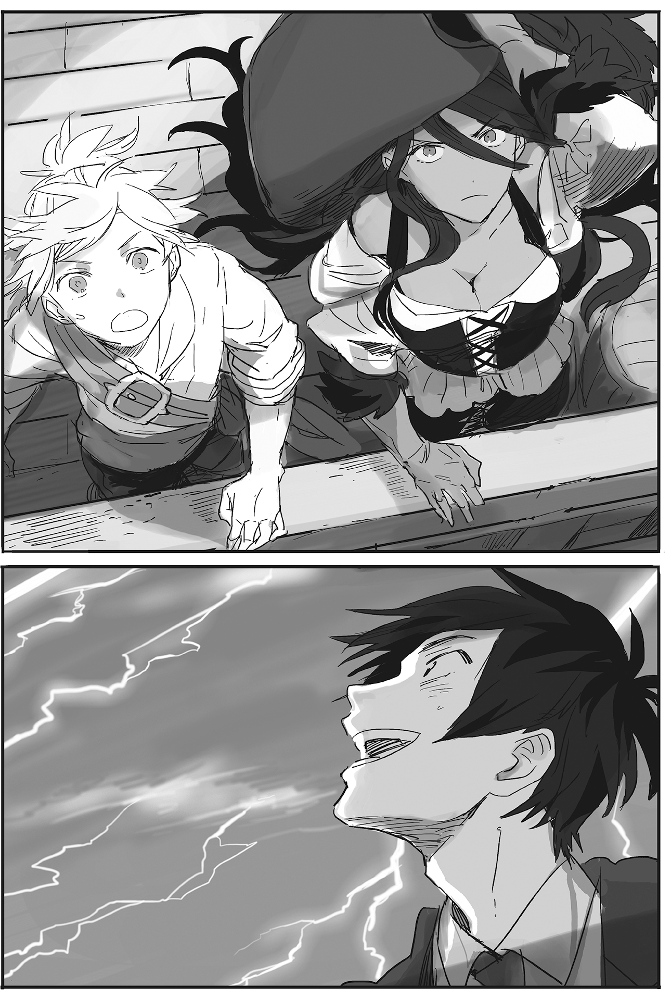
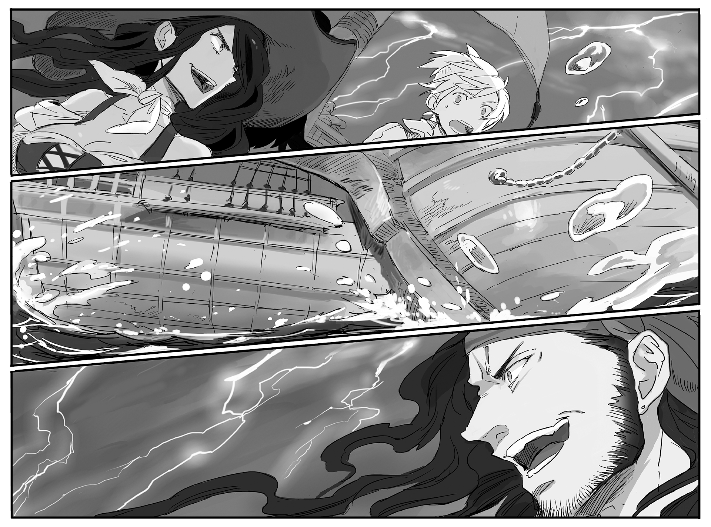
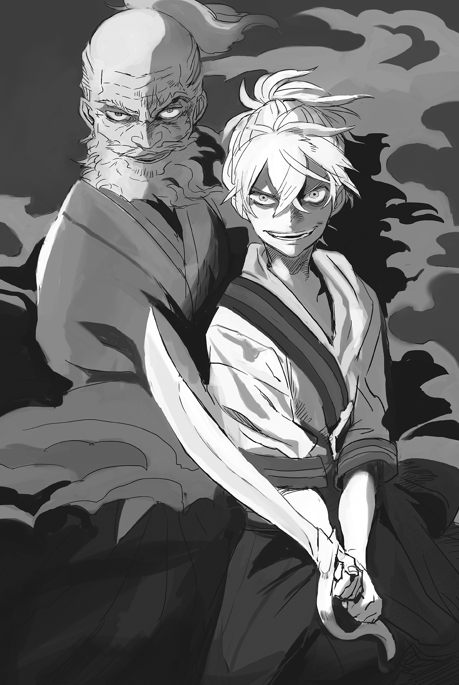

Chapter 3 – Black Storm
.
Part 1
Baldr wiped his forehead that was sweaty from the strength of the blazing sunlight and narrowed his eyes.
「Amazing……」
The ocean that spread out endlessly, the transparent surface of the water that was characteristic to a southern country, the colorful fishes that sometimes came into view.
For Baldr who was raised in the mountain region that was Cornelius, his first voyage was enough to make his young heart dance in spite of his knowledge..
「I’m impressed you aren’t seasick, boy.」
Urraca planned to make fun of Baldr if he got seasick and went pale, but she shrugged her shoulders seeing her expectation was betrayed and tapped Baldr’s shoulder.
「That’s because my semicircular canals had been trained a lot since a long time ago.」
──Mainly by his mother’s training.
「Semicircular……what?」
Damn it. Urraca wouldn’t get it even if he mentioned semicircular canals. Baldr shook his head.
「In other words, I’m used to shaking.」
「Well, if you claim you can do something about Sanpaniradeon without even being able to board a ship, then that would just be a dream within a dream.」
Urraca nodded to herself as though saying that being able to board a ship without getting seasick wasn’t a big deal.
Because she was folding her hands in front of her chest, her splendidly protruding huge breasts were emphasized and Baldr awkwardly averted his gaze.
She was dressed in a blouse that was largely opened at the chest area, a leather waistcoat that was tied with string, and a tight leather trouser that exposed her sexiness. Her appearance was suggestively sexy.
It was only her wide-brimmed hat that made her look like a female captain. It suited Urraca’s black hair.
Even Selina fell behind by a level against such a criminal body figure, while Rorona, the older girl who was Selina’s right hand could just barely rival Urraca.
Baldr imagined the resentful faces of Selina and Seyruun and he shook his head to free himself from his desire.
.
The ship that Baldr and Urraca boarded sailed from Cadiz and headed straight to the west through Marmara Sea.
The type of ship that was mainly used by Majorca Kingdom’s navy would be called a carrack ship on Earth. It had a shape that seemed to be combined with the traits of clipper ship.
It was a ship with a high oceanic navigational ability that was a characteristic of Majorca Kingdom that had a long ocean trade route. The stability of the hull was high. It was using three masts and four types of sails to receive the wind, so its flexibility was high with excellent sailing ability.
On the other hand, because the hull was increased in size, it also had weak points like being unable to perform a tight turn when changing course and was weak against strong storm-like winds.
Those weak points immediately came to the forefront, especially when facing Sanpaniradeon pirates that were mainly using caravel ships. This type of ship used a lateen sail and its size was smaller than a carrack ship, which made its speed faster.
Although Urraca claimed that they wouldn’t lose if they fought head-on, it was difficult to capture the pirates when they ran away.
The pirates would attack like hungry wolves if they thought they had superior fighting strength, but if they thought that they were at a disadvantage, they would use that speed to run away.
It was really a pirate-like tactic. The navy of Majorca Kingdom had to constantly assign the majority of their fighting strength in order to guard their merchant ships in the face of this.
Although they had an alliance with the Sanjuan Kingdom, this burden was bigger than imagined in this situation, where they didn’t know when a naval battle with Trystovy Dukedom would break out.
「We’re going to enter those guys’ hunting ground soon. Be careful so you don’t fall into the sea at least. There are a lot of sharks around here, so there’s no guarantee you’ll keep your life even if you can swim, you know?」
Urraca tried scaring Baldr with her words, but he didn’t look scared at all.
He hadn’t been given such a soft training that he’d be unable to keep his balance and fall into the sea, and even if he fell into the sea, he could escape at any time if he used magic. Shark couldn’t use cancel magic.
「Thank you very much for your warning.」
He could protect himself. Baldr’s words were implicitly filled with such meaning. Urraca smiled sarcastically at that.
She wondered how much of his words would just be a bluff when the real battle started. It was obvious that she was harboring such doubts.
──It was at that timing.
「Two o’clock forward! A platoon of carrion class is approaching!」
Carrion class was the medium size fast ship that Sanpaniradion mainly used. Four ships often acted together as a platoon.
「Those guys are heading this way, yeah?」
Their side only had one ship, the battleship La Mancha.
It was only natural that the enemy was thinking they could win if they attacked with four ships.
Of course, it was a different matter whether their thinking was right or not.
「Hmph, I only planned to scout with a guest today but──ain’t no way I can show my back to an approaching enemy.」
Urraca drew out her sword happily and roared.
「You bastards! The sail preparation is finished already ain’t it!」
The rowdy sailors responded with delighted voices. All of the men here were tough nuts who loved boarding a ship and fighting more than three meals a day.
「Alcohol and sail are seaman’s glory y’know?」
「You said it!」
「…………Yikes, all these people are warmongers.」
Baldr, who was often surrounded by these people of the same type, sighed at his fate of getting dragged into this kind of thing just like usual.
.
The battleships of Sanpaniradeon that were superior in speed split into two groups to surround La Mancha from both sides.
However, Urraca wasn’t so kind as to simply watch that quietly.
Urraca made a smile that was the exact picture of a predator in the hunt of prey. She licked her crimson lips.
「Hard starboard!」
La Mancha changed course to the right with nimbleness that didn’t suit its huge body.
Sanpaniradeon’s ships that planned to surround the sluggish battleship reacted lately at that unexpected movement.
「Mizzen spanker haul out! Let the stern cruise. All hands, brace for impactttt!」
「You’re joking!? We’re going to collide!」
La Mancha suddenly dared to tackle the enemy ship. Baldr reflexively screamed seeing that.
「Hah! What is a little collision? It’s their fault for getting close!」
Urraca let out a smile of satisfaction from finally being able to make Baldr lose his calm. It seemed she had been very conscious about Baldr without her even noticing it herself.
「Main and upper topsail, aback. Put a brake on ittt!」
*Bam* A heavy impact was transmitted to the floor under Baldr’s feet. The impact was far smaller than he expected. It must be because of the height of the sailors’ skill that drastically reduced the ship’s speed in one go.
The poor victim of that intimidating ship handling technique was one of Sanpaniradeon’s consort ships that was approaching from the starboard.
That ship turned their rudder toward their port to dodge the sudden change of direction of La Mancha, exposing their lurching hull which was completely defenseless.
The solid stern of La Mancha that was specially made collided right there.
Because the lurching of the hull crossed its stability limit, the ship immediately capsized with ease. Baldr was watching that in disbelief.
A carrack ship that didn’t have a ram installed on it in order to open a hole in an enemy ship’s hull was displaying this kind of violent divine feat. It was something that his mind found hard to believe.
「That cheeky little……! You bastards, don’t let them go home alive!」
Even after being shown such masterful ship handling, the enemy got blood rushing into their head instead. That might be just be how a sailor is. The remaining three ships threw some nets and they fiercely attempted to board La Mancha for hand-to-hand combat.
「Obar(オバル)! I’ll leave the ship’s command to you. The rest of you, follow me!」
「Oooo!」
Urraca and her men joyfully went to the enemy ships with lively roars.
「Boy, offense or defense, which one are you going to pick?」
Baldr shrugged at Urraca’s teasing. Even after all this, he couldn’t bring himself to dislike this woman.
He wondered why he had been fated to keep encountering this kind of woman.
「──Naturally, I shall accompany you to attack.」
.
Both sides followed the ropes and began fighting man to man. The enemies were trampled one-sidedly by Urraca and her men.
「The enemies are few! Surround and push them back!」
「Hah! Don’t think you can surround me above a ship!」
Urraca was running around above the deck’s unstable floor as though she was flying.
Her subordinate sailors were also used to fighting aboveship. They were defeating the enemy sailors one after another with footwork that didn’t look unsteady at all.
「Now then, what about that boy……」
Urraca believed that it would be difficult for a lander to fight on sea, and yet she saw something unbelievable there.
Despite the shaking ship, Baldr cut down three sailors that he passed.
「Be careful……this guy, is toug-……!」
In addition, he even cut the man who seemed to be the captain with a single stroke. Their swords didn’t even clash against each other. Surprised gazes gathered on him from both enemies and allies.
Right now, it was Baldr who had defeated the most enemies.
Baldr was cutting down the enemy sailors with flowing movement that made even the veteran soldiers among his allies dumbfounded.
His figure that was slaughtering the enemies easily as though he was doing a dance performance looked like a legendary death god that invited the sailors to the underworld.
「……Now that’s shocking.」
Urraca didn’t feel like she would lose against anyone in a ship battle, but she wondered what would happen if she fought Baldr right now.
Urraca’s evaluation toward Baldr was changing from a cheeky brat to a skilled warrior who couldn’t be underestimated.
「──No good! Who the hell is going to fight this kind of monster head-on!」
「Pull back the nettt! Open all the sailssssss!」
The enemy ships scattered like baby spiders and ran away in a panic. There was no way Urraca and her men would just watch that quietly.
「Unfortunately, the fate of a man who laid his hand on a woman that he shouldn’t have touched is already decided.」
How pitiful…… Baldr swung his sword to the man who seemed to be the ship captain while feeling sympathy as though this wasn’t simply other people’s affair.
The ship captain fell wordlessly with an anguished face as though reality had betrayed him.
「D-don’t kill me! I surrender!」
The sailors who realized they couldn’t escape with the death of their captain started to raise their hands and surrendered one after another.
.
Around the same time, the enemy sailors who assaulted La Mancha were also attacked by the vice captain Obar and suffered a wretched experience.
「How stupid you guys are, to attack the Tormenta Negra with only this much force!」
「Shit-! Too strong……is this ship a gathering of monsters!?」
They immediately escaped while leaving the many dead bodies of their comrades.
One of their ships capsized while one more ship was suppressed and surrendered. They had no more chance of victory──the remaining two ships separated from La Mancha and began running away.
「Don’t let them get away! Follow them!」
However, once they started rushing away, capturing the light and speedy caravel ships that Sanpaniradeon used wasn’t easy even with La Mancha’s specs.
The naval battles in this world didn’t use cannons, instead ramming or boarding enemy ships for melee. It was impossible to do battle except from very close range.
The exultant mood just now had changed completely. An air of impatience and irritation was starting to drift around La Mancha.
「Tsk……they’re only good at running.」
This was one of the reasons why Majorca Kingdom’s navy couldn’t capture the Sanpaniradeon pirates despite being their superior in fighting strength.
Of course Majorca Kingdom also had speedy caravel type ships, but they would be counterattacked if they moved independently, so in the end they still had to rely on working together with the big ships.
And then there was another reason. It was a big problem that Majorca Kingdom’s navy had to solve.
.
「──Boy, it will be soon. Open your eyes wide and watch.」
After pursuing the pirate ships for several hours.
The land of Trystovy was starting to become visible across the horizon. The weather was gradually becoming ominous too.
Urraca called Baldr to the deck as though she had been waiting for this.
This was what Baldr and others were setting sail for originally.
「Then, the destination of those ships is the enemy’s stronghold?」
「Yes……it’s the graveyard of sailors. It’s also the residence of the lightning god, the entrance of Akaba.」
Baldr gulped.
There was a sinister atmosphere over there that was worthy of that ominous name.
The weather was rapidly worsening as they got closer. The sky was completely filled with black clouds of low altitude.
「This is as far as we can go. It’ll be dangerous for our ship to head further.」
Urraca scratched her glossy black hair with an awkward face.
「You’ll see it soon, the hammer of Akaba.」
If only this didn’t stand in their way, Urraca would’ve already attacked there by now. She glared at the clouds that were turning even darker.
The two ships of Sanpaniradeon were getting farther, as though they were being sucked into the darkness. Then a streak of lightning violently assaulted from above.
「Ah!」
Baldr who felt how the lightning had fallen just now spontaneously raised his voice.
However, the two ships were continuing to advance as though nothing had happened.
Then several more streaks of lightning fell, as though the two ships angered the sea god
Lightning kept falling in succession even after that.
Baldr’s eyes widened like a saucer seeing that unrealistic sight.
Dozens of lightning bolts covered the sky. It was a menacing natural phenomenon that was unfolding in 180 degrees, forming a great panorama. Anyone who saw this would be unable to stop themselves from being clutched by their primitive fear.
But Baldr, no, Masaharu knew about this phenomenon.
There was a similar natural phenomenon like this on Earth, where Masaharu lived in the past. What was it called again?
Masaharu’s eyes were stolen by that sublime sight while also muttering in admiration from the bottom of his heart.
『This is the same thing as the Lighthouse of Maracaibo!』

──Lighthouse of Maracaibo. There was the Maracaibo Lake in the northwestern regions of Venezuela, with the Catatumbo River flowing into the southwestern portion of the lake. A singularity phenomenon of lightning was occurring near the mouth of this Catatumbo River.
Lightning mainly occurred in Japan from April until November, but lightning was generated in this place for almost the whole year at an absurd number.
The Lighthouse of Maracaibo even left a Guinness book record for the highest rate of lightning, at a rate of 3600 in one hour.
Every year there would also be casualties from the lightning strike. Even modern science couldn’t completely understand how this phenomenon could occur.
It was named the Lighthouse of Maracaibo because in the Middle Ages when there was no GPS and radar, this phenomenon served as a lighthouse for the sailors, functioning as a landmark.
To think that he would be able to see a similar phenomenon in another world──.
.
「Mara……caibo? What’s that?」
Urraca tilted her head at the word that Baldr unconsciously said.
Baldr noticed that he had unconsciously muttered a word from Earth and scratched his head with a wry smile.
「Actually, I know another place where lightning falls throughout the year like that. That place is called Maracaibo.」
「I didn’t know that there is another cursed land like Akaba out there.」
Urraca noticed something after saying that and her face broke into a smile.
「That means, there is something we can do about that annoying lightning, right?」
Urraca’s personality that was straightforward for better or worse felt very charming for some reason. Baldr stared at her with a warm smile as though he was watching a younger girl.
Urraca’s chest thumped in response to that affectionate smile.
(W-what? Suddenly my breathing is──)
For some reason, she was finding it harder to breathe after seeing Baldr’s smile, but Urraca interpreted it as her excitement that a chance to defeat her old enemy had finally arrived.
Perhaps this was a part of the unfortunate reason why a beauty like Urraca was still unmarried.
「Of course. The legend of Akaba’s impregnability will soon be a thing of the past.」
「Y-yosh! Boys, we are retreating! Prepare for tacking! Port!」
「Port, sir!」
.
Part 2
La Mancha changed course with a splendid turn. There was a sharp gaze that was watching the departing ship.
「If only that tomboy advanced for half a mile more, we will be able to capture her.」
「Boss, if we don’t do something soon, it’s going to be bad y’know……」
「Sheesh, it’s because those Trystovy guys are a bunch of lazy asses that diligent pirates like us are getting the short end of the stick.」
The man called the boss ruffled his hair roughly in dissatisfaction.
.
The name of this forty two year old man who was in his prime (no objection allowed) is Kailas(カイラス).
He’s the great pirate that knew everything there was to know about Marmara Sea, the boss who leads Sanpaniradeon, and he was also a military personnel who belongd to Trystovy Kingdom’s navy in the past.
In the first place, Sanpaniradeon was a sea mercenary group that guarded the transport ships of prosperous merchants in Trystovy Kingdom.
The group’s scale expanded and they got scouted to join the military of the kingdom. They were enticed by salary that would become higher the more capable they were. Kailas was also one of such people who was headhunted to be military personnel.
And yet, Trystovy Kingdom fell into civil war because of the coup d’etat. The environment around Sanpaniradeon changed completely from that.
The civil war wasn’t so lukewarm that Sanpaniradeon would be ignored while they possessed a fighting strength that while inferior against a country was still strong enough.
When the kingdom was divided into three factions of the archduke faction (the current Trystovy Dukedom), the royalist faction, and the merchant faction, each of them started trying to bring over Sanpaniradeon that was an independent maritime force into their side.
However as a mercenary group that was hired by money, Sanpaniradeon didn’t have the slightest intention to let go of their freedom to decide their own affiliation.
A mercenary group with skill that could even toy with the regular navy if they were careless and could switch sides at any time depending on the pay. What would the three factions that had continued their dispute with each other think about them?
Of course, anyone who wouldn’t become their ally was an enemy.
At first, Sanpaniradeon was affiliated with the merchant faction that had abundant funds. When the archduke faction came to invade the port city Mulberry, they repelled the archduke’s fleet even at the cost of many sacrifices.
It didn’t matter how much the merchant faction hardened their defense with their abundant money, because they were depending on maritime trade, they would be inevitably driven to death from emaciation if the control of the sea was taken away from them.
In other words, it could be said that Sanpaniradeon had made the biggest contribution in maintaining the merchant faction’s independence.
But when the state of the war fell into a stalemate, the number of nobles of the archduke faction and merchants of limited loyalty who explored the possibility of compromise with each other increased. It was making the situation complicated.
A tragedy was then visited upon Sanpaniradeon..
The president of Damos company, one of the largest companies that could even be counted among the top ten of merchant faction, died a sudden death. The heir then inherited the company as the second generation president.
When the elder assembly of the merchant faction made light of him, he willfully held a grudge and plotted to switch sides to the archduke faction bearing a gift.
In exchange of being appointed as the feudal lord of Mulberry, he would offer presents to the archduke faction. A part of those present was──none other than a betrayal towards Sanpaniradeon.
The second generation president who received a secret command from the archduke faction requested Sanpaniradeon to guard a ship convoy.
In a stroke of bad luck, Damos Company was an important customer for Sanpaniradeon before the second generation president’s betrayal, so the group’s boss at that time, Morgan happily accepted that request.
「You can entrust them to us, president. You can feel as relieved just like when boarding a large ship. Well, our ships are also literally large ships though, hahaha!」
The friendly Morgan personally joined the convoy to guard it. That became his last voyage.
The second generation president secretly leaked the sea route of Sanpaniradeon’s convoy. He didn’t stop there and also colluded with the Trystovy fleet to attack Sanpaniradeon from behind.
Caught betweenthe betrayal of the client and ships that they thought as allies and should be protected, it was impossible for Sanpaniradeon to endure no matter how skilled they were as sailors.
The Sanpaniradeon fleet that guarded the convoy was tenaciously attacked and not even one of them was left alive.
This tragedy on the sea wasn’t witnessed by anyone. But it was still told to Kailas who was one of the leaders at that time.
The one who told him was Tolpa, the beloved hawk of Morgan.
From the hastily scrawled letter that Morgan told Tolpa to bring, Kailas learned the truth of the situation and he was furious.
He immediately led the fleet under his command and assaulted Damos Company. He didn’t listen to any question or justification to him and slaughtered the president along with his wife and children with no question asked. He also burned all of the company’s ships, warehouses, and shops to the ground.
His rage was also pointed towards the merchant faction that produced the traitor. Kailas and those who supported him used Akaba as their base and completely became independent as pirates.
The merchant faction hurriedly apologized to him and offered a great amount of money that would blind anyone’s eyes. However, only about twenty percent of the whole fleet made peace with the merchant faction and remained in Mulberry.
Since then, Kailas led the reborn Sanpaniradeon and rampaged everywhere as he pleased among Trystovy, Majorca, and Sanjuan.
.
「──Even so, it’s a bit troublesome to face that Tormenta Negra on the open sea.」
Actually, Kailas rated Urraca’s fleet commanding ability higher than anyone.
Although he once made her taste defeat in the past, that victory was more like a fraud where he made use of their difference in experience. Against Urraca right now who had become the navy minister of a kingdom, he wouldn’t be able to lose against her as the stronger opponent.
If only Trystovy Dukedom’s navy was more energetic, both Majorca and Sanjuan wouldn’t have any spare energy to care about Sanpaniradeon. However, since Trystovy Dukedom’s fleet tasted a painful defeat that one time, it seemed they changed priority to maintaining their fleet and didn’t have any intentions to do battle at all outside of extraordinary circumstances.
Because of that, Urraca’s sight had been locked on Sanpaniradeon all this time.
Even so, if they kept shutting themselves in Akaba like this, his comrades wouldn’t be able to make a living.
Kailas was in a position where he had to make a decision to commit to a decisive battle or make peace with the enemy somewhere down the line.
「Hmph, those lots at Trystovy will only rejoice if we were to be defeated by Majorca.」
Their ulterior motive must be to wait until Sanpaniradeon and Majorca Kingdom took each other down before they came and mobbed up the survivor.
The reason for him not surrendering to Majorca and Sanjuan even though he could read Trystovy’s intention was solely because of Sanpaniradeon’s disposition that cherished freedom, and also because of his fear toward the betrayal that happened in the past. It weighed on him like a curse stabbed into his heart, like a needle that was impossible to pull out.
「Good grief……Old man Morgan, this burden is too heavy for me……」
.
Part 3
They arrived at Parma Port, which was the base of Majorca Kingdom’s navy and also Urraca’s territory. As soon as they arrived, Baldr was pushed down by the bloodshot Urraca.
「And, what should be done now? What should we do so we can attack that Akaba? What should I do so I can teach that shitty bastard a lesson?」
「Calm down, first please calm down! Someone stop herrrr!」
「Fuuuuuh! Fuuuuuh!」
「Are you an excited boar-!」
The disappointing feeling that Baldr felt from Urraca’s behavior was staggering, due to a great beauty like her acting like this. Baldr tore her off from himself and tidied up his messed up hair.
「Don’t tell me, you’re going to tell me now that actually it’s impossible? If you actually say something like that to me at this late hour, I have the confidence I’ll snap completely.」
「Please don’t snap! Well, I won’t say it’s impossible but……」
Even so, Urraca’s enthusiasm for this matter was abnormal.
The vice captain Obar must have noticed Baldr’s puzzlement. He told him the answer with a wry smile.
「It’s because the opponent is the only one who gave the miss a black mark in her record. They had also fought several more times after that, but each time they would get away just like what you saw before, so her stress has been accumulating all this time.」
「That wasn’t a defeat! I told you I never losttttttt!」
「Miss……don’t say something so unsightly yeah.」
「Ugugugu……」
Urraca sulked while gritting her teeth. It seemed she really couldn’t stomach the idea of losing.
「Eeeii! Enough with that and talk already! How can we invade Akaba?」
Realizing that she was at disadvantage, Urraca returned to her first question once more.
「──In short, we should just do something about the lightning right?」
「If such thing is possible.」
Certainly those countless lightning strikes were stunning, but as long as they could defend against those, it wouldn’t be impossible to do battle.
Of course, the enemy had the home ground advantage, and it was extremely difficult to sail a ship under bad weather, but the Majorca fleet would manage somehow with their skill.
In the end, the only problem was the lightning.
「In that case it’s not that difficult of a problem. Just have the fleet install a lightning rod and it’s done.」
「Lightning rod?」
Urraca tilted her head at those unfamiliar words.
The gap from her appearance of a beautiful young lady and her girlish gesture was quite charming.
.
The one who discovered that lightning was electricity was a scientist in the eighteenth century, Benjamin Franklin.
He flew a kite inside a storm and proved that there was electrification within the thunder cloud, but this was a dangerous experiment so all of you good kids out there mustn’t imitate this no matter what.
After that, he elucidated the nature of lightning and invented the lightning rod. This lightning rod wasn’t for evading lightning but instead to guide it. It was a mystery why it was named as ‘hiraishin’ in Japanese, which had the meaning of lightning evasion needle.
The lightning rod’s structure itself was extremely simple. By guiding the lightning strike to hit a metal protrusion and then guiding it to the ground, the building would be protected.
In case of a ship, the sea itself would act as the ground, so there wouldn’t be any problem if the electricity was just guided to the sea.
In reality, the power of lightning was terrifying. If it struck the ship’s mast directly, the ship would inevitably go up in flames and be destroyed.
Perhaps the ship wouldn’t sink if it was lucky, but a ship that had its mast rendered useless would become a sitting duck.
Urraca’s expression was very doubtful and she narrowed her eyes at Baldr’s explanation.
「……Can lightning really be blocked with just that?」
「I’m not lying. I’ll be torn limb to limb if you found out that I’m lying about this, right?」
「Certainly, I’ll cut up your body bit by bit for fish feed if you’re lying.」
「Thank you for the concrete example……」
There Obar’s face turned glum.
「Even so, our fleet will be annihilated in case this method doesn’t work. I really want to believe you boy but, if there isn’t any guarantee at all……」
What Obar said was also reasonable.
This lightning rod was planned for use when attacking Akaba, so in case it wasn’t working, then Majorca navy’s main force would fall into danger.
「What then? Don’t tell me you want to go to Akaba with only one ship just for an experiment? There is no way we can do that.」
Urraca bit her thumb in irritation.
She wanted to settle her debt with Sanpaniradeon as soon as possible.
When she was still inexperienced as a sailor and as a warrior, she was driven into a complete defeat by Kailas. Defeating him was a path that she had to walk in order for her to become an adult in the truest sense.
「I also don’t want the information of us obtaining the lightning rod to fall into Sanpaniradeon’s hand……is there no royal court magician who can use lightning magic in Majorca or Sanjuan?」
「It’s a different matter if it’s the four main elements, but when it comes to lightning magic……no, come to think of it, there is just one person.」
There were a lot of users of great magic of earth, water, fire, and wind, but composite magic like lightning or snow couldn’t be used besides by a special person like a royal court magician.
It seemed there was only one person like that in Majorca Kingdom, because this country couldn’t be described as advanced in magic even as flattery.
「Then can we request that person to do this experiment?」
.
Part 4
And then after waiting for three days, that person finally arrived.
「──Why is her majesty the first queen of Sanjuan here!?」
(There is a limit even in being unexpected……!)
「No no, Maria-nee is nicknamed as the heaven-sent child of the sea god. After all, she is the number one genius magician since the founding of Majorca and also the priestess of the sea. The impetus of Maria-nee’s marriage with Carlos also began when she was dancing the priestess’s ceremonial dance for the sea god festival. He fell in love with her at first sight watching her dance.」
Even though it was a story about Maria, Urraca was talking proudly with a puffed up chest like it was about herself.
「Sheesh, Urraca! How can you talk about such old story to a guest…….」
Maria blushed while hitting Urraca’s firm belly with a punch that was backed by the twist of her waist. Her face kept smiling throughout it.
「Gofuuh!」
Urraca who got her stomach hit by a full powered body blow bent forward and she writhed in pain.
「Err, the impression I got from her is completely different from when we met before though……」
「Actually, this is the lady priestess’s true personality──how should I say it, she has a fear of strangers.」
Obar shrugged with a sigh.
Urraca rolled around on the ground while grinning mischievously.
「It seems she is wearing sheep’s clothing when at the palace, but if you mentioned the name of Iron Fist Maria, even a crying child will shut up……」
「Geez, Urraca you tattletale-! Punishment for you!」
「Gefuuuuh!」
Ah, she flew in the air while somersaulting three times.
To think that Queen Maria who looked so docile and fragile could be this kind of tomboy.
「Say……please keep what you saw just now a secret from Franco and Pedro okay? If not then I’ll……」
Maria clenched her fist strongly. Baldr raised both his hands in surrender.
「Of course, I’ll never mention this to anyone!」
.
「──I see, I just need to make lightning strike that ship.」
Maria looked up at an old carrack ship that was installed with a lightning rod. Then she slowly stretched her petite body.
Though she was going to do magic instead of physical exercise after this.
「Descend, the iron hammer of heaven──Volt!」
Together with a dazzling flash, the lightning struck the lightning rod without any erring.
And then the lightning energy that struck the lightning rod passed through the route that was guiding it to the sea and it was safely dispersed inside the sea.
It was just the natural result following the fundamental law of the world, but Baldr spontaneously patted his chest in relief.
Urraca stared at the ship that was completely undamaged with a shocked expression. After she confirmed that it wasn’t an illusion, she raised her fist and exploded in joy.
「YOSHAAAAAAAAAAAA! Just you wait, Kailas! I’m gonna take your head this time for sureeee! Oi boys, it’s party time! Take out all the alcohol we got!」
「ALCOHOLLLL!」
「IT’S PARTYYYYYY TIMEEEEEEE!」
Was this joviality because they were Urraca’s underlings or because all of them were sailors?
「Aalcohol♪Aalcohol♪」
Maria joined her hands together in front of her chest while skipping around in excitement.
「Your majesty, just why are you looking that happy……」
No good, it felt like he would become unable to trust women like this.
.
The party became really lively.
Urraca’s tension was especially at its peak. She danced with the sailors, then she drank rum right from its bottle heartily, and then she came at others to urge them to drink some more.
It was Baldr who became the greatest victim of this troublesome urging.
「Drinkkkkk! Drink more! Drink until you puke!」
「Wait……I’m still underage──」
「Are you saying you won’t drink my rum!? I’ll shove it down your throat even if it’s by force, oraaa!」
Baldr already emptied five bottles and couldn’t drink anymore. He desperately resisted but Urraca forcefully grabbed his cheeks and acted roughly by trying to give him the rum mouth-to-mouth.
「Nnnnnnnnnn!」
「Stop! I have my wives(fiancée) back home waiting for me!」
For good or bad, Urraca seemed to reach her limit there and she leaned on Baldr’s chest limply. She then fell asleep with a peaceful sleeping face.
「This is my first time seeing Urraca-chan this defenseless.」
Maria peered into Urraca’s sleeping face affectionately and smiled. She was also really drunk right now.
At the very least she should have drunk as much as Urraca or even more than that, but her face only looked slightly flushed. Other than that there was almost no change from how she usually looked. Just how strong was she with alcohol?
「Just as you know, Urraca-chan’s father died when she was little, after which she was then raised by her grandfather. Because of that she grew to become a slightly unique girl. This is the first time Urraca is opening her heart this much toward a man that she has just met.」
Baldr got a bad premonition for some reason. His shoulders were shaking from a slight chill.
「And so I’ve something to ask you. While Urraca-chan is sleeping──」
Maria’s eyes glinted and she licked her lips bewitchingly. There wasn’t any trace of the reserved good wife and wise mother from the palace in her current appearance at all.
「──Won’t you rape her?」
「Apologize! Apologize to his majesty Carlos and his highness Pedrooooo!」
「Eee~~, even though I thought that springtime has finally come for Urraca-chan tooo……」
「Even if you talk cutely like that, bad things are still bad!」
「You know, Urraca-chan is really an innocent girl even though she looks like this, so when she wakes up in the morning and realizes what happened, I think she will become really putty-like relatively quickly. How should I say it……those who dare, wins? Something like that.」
「I don’t get what you’re talking at all, but the you right now is just the worst!」
「Even though I’m just thinking of Urraca-chan’s happiness!」
「In what world is there someone instigating a man to rape her sister because she is thinking of her happiness!?」
Urraca’s hands went around to Baldr’s back and hugged him tightly while the two were having such an argument. She was turning him into her pillow.
「Nn……Ojii-samaaa…….」
Urraca slept soundly on Baldr’s back with a satisfied look. Maria clenched her fist once more.
「Look! As I thought……」
「What do you mean look!」
(It’s amazing that his highness Pedro can grow to become such a good child!)
.
Part 5
A squad of knights was patrolling the streets of Sanjuan Kingdom’s capital, Cadiz. They were keeping a watchful eye for anyone suspicious.
Since the assassination attempt on Franco the other day, the security in the capital was kept in a state of high alert until now.
A single shadow was slithering through the darkness of the night without being hindered by such security.
Even though the silhouette should be right there, no one paid it any attention.
It was like that silhouette was invisible and didn’t exist, like a shadow that everybody would ignore.
The shadow’s true identity was Bartholomeo de Cervantes. He was the leader of the assassination attempt that the knights were currently searching for in a frenzy, although his identity still hadn’t been discovered.
「Do they think I’ll be captured just from this?」
Bartholomeo was also burning an incense that was obstructing recognition, but from the start he was already a man with thin presence.
His strong desire to kill and his murderous intent gave him a far different impression from such a thing, but if he felt like it, he could always blend into the scenery like air at any time.
He evaded the gaze of the sentries and infiltrated a towering mansion at the port.
.
「──Pardon my intrusion, your excellency.」
「W-who?」
A voice of a man came like a whisper that was accompanied by a gust of the night wind. Santacruz felt a chill that didn’t befit this humid southern country and shivered.
「It’s me, your excellency.」
「B-Bartholomeo! You fool! Have you forgotten that I told you to go hide for a while!?」
Right after the assassination failed, he sent the majority of Akaishi agency’s members to the remote region where the investigation effort wouldn’t reach them.
King Carlos was angered by the assassination attempt and ordered his royal guards to apprehend the culprit, and because of that it became impossible for Santacruz to camouflage the incident. Therefore he could only do this until things calmed down.
Of course Bartholomeo was also perfectly aware of that, but he had something that he had to ascertain no matter what.
「I heard that the military is going to switch sides to Prince Franco, is that true?」
Santacruz’s complexion immediately turned pale. Bartholomeo didn’t miss it.
(So, it’s as I thought──)
He was half-doubting this information because it was too absurd, but he was finally convinced from Santacruz’s expression.
The military was undoubtedly becoming intimate with Prince Franco, who should be their sworn enemy.
Bartholomeo couldn’t even imagine what kind of change in the political landscape could bring about such a result. However, he was able to understand just how dangerous his situation had become from this.
He and his men who carried out the assassination and were also in charge of numerous shady dealings of the military would be nothing more than nuisances for the new order.
「I’m aware that there is such movement from a part of the military. However, as long as Duke Cordoba is still behind Prince Franco, such an idea will be nothing more than a pipe dream. There is no need for any worry.」
「I see. Then──the military won’t be reluctant to cooperate with Prince Franco if Duke Cordoba’s influence can be removed?」
Prince Franco’s mother was the daughter of Duke Cordoba. Normally removing the influence of Cordoba House would be an improbable story because there was nobody who could rival a great noble like Duke Cordoba in this kingdom.
However, it seemed there was someone who accomplished that using an unknown trick.
「Foolish……such a thing is simply impossible. Return back to your hideout quickly without thinking of any unnecessary concerns.」
「There is nobody who can capture me secretly without anyone else finding out. As long as I’m safe, there won’t be any proof that tied me with your excellency. Please have no worries.」
If his words were put another way, even Santacruz wouldn’t get away unscathed with just a single action from Bartholomeo. It was a scathing threat.
「It’s not rare for self-conceit to trip someone up. Get out quickly.」
Santacruz was already aware, but as expected, this man was dangerous.
As a matter of fact, Santacruz was in opposition to the movement of the military to support Prince Franco. However, he was also aware that if Majorca Kingdom supported Prince Franco, he wouldn’t be able to stop the military from changing sides with just his opposition alone.
Prince Pedro could become a contender against Prince Franco only because the military could expect support from Majorca Kingdom.
Especially the navy, because it would be very difficult to maintain their control of the Marmara Sea without the help of Majorca Kingdom.
If an indispensable allied country was supporting Prince Franco, the people who were smart in finding opportunity would all decide to support Prince Franco too.
At that time it would be inconvenient if Bartholomeo was alive.
Even so, the illegal force Akaishi agency was under the control of Bartholomeo. The pawns that he might be able to use against them were only the military’s irregular special force at best.
As expected it would be difficult to conceal it if he dispatched them──
「I say, it seems I have worsened your excellency’s mood. I shall leave quickly to decrease your excellency’s worry.」
Bartholomeo speedily avoided the gaze of Santacruz who was starting to have such dangerous thoughts and left the mansion.
Things had become very annoying. With this, he would become unable to taste the joy of killing to his heart’s content.
Bartholomeo could carry out crimes like kidnapping, murder, coercion, and robbery without being pursued because he had the military as his backer.
If he turned the military into an enemy, Bartholomeo would lose the majority of his life’s fun.
He needed a new master.
A master who wasn’t too smart and would give him the authority and work that could satisfy his hunger.
「Now then, I wonder if there is an employer who needs my skills.」
Bartholomeo put his hand on his forehead while looking really troubled. From both his sides, the shadows suddenly leaped at him as though they had obtained human form.
This was an attack that would completely take an average person by surprise, but Bartholomeo only smiled thinly and shook his head.
He threw a knife at one of the shadows, piercing its neck.
「Gah!」
The shadow fell on the ground with a single cry.
The other shadow that realized their surprise attack had failed didn’t confirm his comrade’s death, running away as fast as his legs could carry him.
However, there was no way Bartholomeo would just silently let that defenseless back go.
「……This is a method of the underworld. Looks like the military still won’t move.」
Bartholomeo said that and wriggled his fingers in amusement.
Then a gleaming silver steel string that had been laid out without anyone noticing followed his fingers’ movement and cut apart the shadow into pieces.
Entrails were scattered and red blood was splattered on the brick alley. Bartholomeo looked down at the assassin who died instantly and muttered.
「Looks like I have to hurry……」
It seemed the underworld society that had a grudge against Bartholomeo had quickly judged that he had already lost his backer and started to move against him.
.
Part 6
「Hmm~……I thought that he might be able to do it, but to think that he will do it this quickly.」
Jose, who came leading the fleet of Sanjuan, found Baldr and waved his hand cheerfully.
Of course a part of him was holding hope about Baldr’s knowledge.
However, the opponent was the ruler of Marmara Sea, the Tormenta Negra.
She wasn’t that easy of a woman who would give her trust just because she was given the way to conquer Akaba’s lightning.
And yet Baldr was accepted on board La Mancha as though he was an old friend. It was a feat that made Jose even feel fear.
Baldr greeted him with a smile.
「As I thought, you look really good aboard a ship, admiral.」
「I like deskwork better though.」
「You’re joking, admiral.」
Jose wasn’t suited with physical labor, but he loved the sea. Baldr judged that this man was a genuine sailor deep inside.
Even so, it was a magnificent sight.
Jose came here leading the first fleet of the Sanjuan Kingdom’s navy. This fleet was specialized for battle and it was the core of the military.
It could be said that this fleet was occupying the majority of Sanjuan Kingdom naval battle strength.
The ship that Jose commanded was the newest type of mast ship that resembled La Mancha. It had a design that could be expected to catch wind better than a ship that was using square sails.
「Oo, Jose-dono. Thanks for coming!」
「Isn’t this Urraca-dono? My thanks for the welcome.」
Jose bent his waist politely. Urraca replied to him in a good mood and hugged his shoulders.
「You have aged very well, Jose-dono. I won’t be able to keep my hands off you in twenty years.」
「Hahahahaha……」
Urraca’s jijicon was also still as usual.
.
「We’re going to subjugate Sanpaniradeon that is nesting in Akaba this time for sure.」
Urraca proclaimed with a rough nasal breathing. The ship captains of Majorca all nodded firmly.
Just like Sanjuan Kingdom, Majorca Kingdom was also dispatching almost all of their ships that could sail the ocean. If the number of ships from both countries was combined, the fighting strength could be said as distinguished even throughout the continent.
Their blood as warriors was also aching for this fight.
The feeling of wanting to join a grand fleet like this and throw themselves into a battle that would be recorded in history, even Baldr could understand such feelings well because he was born as a man.
「Even so, to think that lightning can be blocked with this kind of simple contraption……」
Jose was deeply emotional when he looked at the lightning rod and smiled wryly.
Baldr got curious by his reaction and asked.
「Is there something that concerns you, admiral……?」
「No, actually Urraca-dono isn’t the only one. Once I also met a painful experience because of Kailas.」
He wished to regain his honor one day, but to think that the chance for revenge would arrive in this kind of shape.
As long as that thunder cloud existed at Akaba, Sanpaniradeon was thought to be unbeatable.
「That’s……worrying.」
Baldr only thought that they would be able to win as long as the lightning could be neutralized somehow, but the fact that even Jose was defeated in the past made him renew his assessment of the man called Kailas.
Even without lightning, Sanpaniradeon must be a terrifying enemy.
「Do you know about the man called Kailas?」
「No……I only know that he is the leader of Sanpaniradeon.」
「Originally, he was a military officer of Trystovy Kingdom’s navy. If you mentioned the name of Clairvoyant Kailas, any old navy officer will know his name. Right now he has never fought properly because of his pirate business, but when there were still many skirmishes between Sanjuan Kingdom and Trystovy Kingdom, he was a really dangerous opponent.」
Jose was a sailor before he was a military officer. In his words there was a feeling of respect and jealousy that couldn’t be hidden.
「So he is a man of such high caliber……」
「Baldr-dono, why do you think navy will be stronger the closer they are in an area near their base?」
Baldr pondered the meaning of Jose’s question.
Normally the closer the fleet was to the base, the shorter the supply line would be. Even galley ships and small ships that couldn’t sail far away to the ocean would also be able to join the battle.
However, the answer to Jose’s question wasn’t something like that.
Most likely the reason Kailas was strong──was something related to the skill of the sailors.
Suddenly Baldr recalled the Battle of Dan-no-ura in Masaharu’s knowledge.
In that battle which was famous as the last battle between Genji and Heike clans, the reason that Minamoto Yoshitsune’s army that was in disadvantage could turn the table and crush the Heike force was because of the change in the tidal current.
「The complete knowledge of the peculiar ocean current of the local area──and also the wind direction, is that the answer?」
Jose’s thin-slitted eyes widened hearing Baldr’s answer. Then he chuckled in surrender.
「I’m glad that you’re an ally. If I have to turn either you or Kailas into enemy, I’ll undoubtedly pick Kailas.」
He wondered how Baldr who wasn’t even a navy could understand the concept of home turf advantage in the ocean that could be said as a top secret knowledge. Including the matter of lightning rod too, this young man had something in him that made him even felt it was stupid to keep getting shocked by what he did.
「The reason Kailas is nicknamed as Clairvoyant is because of his genius in reading the flow of wind, that’s all there is to it. With him as the opponent, even fighting within the home turf of our ally won’t be an advantage.」
When Jose was still a mere ship captain, he was chasing after Kailas’s ship in an area that he was familiar with. He grasped the flow of wind and closed the distance, but then because of the low atmospheric pressure the wind blew to a completely different direction and he failed to seize the wind. His ship was then sunk by Kailas.
The fact that he was still alive right now was simply of his good luck that there was an allied ship that happened to pass by.
For a sailor to lose against the enemy in reading the wind within his own turf was simply a disgrace.
「──I have to pay back Kailas this time for sure. Because of that……I’m counting on you okay?」
Baldr smiled wryly. He was troubled that he got such expectations placed on him so one-sidedly.
「Please spare me. I’m just a complete amateur when it comes to sea after all……」
「There are also some situations when being an amateur can be useful. Especially when facing an absurd opponent like Kailas.」
Besides, this time there was also another person who he could rely on other than Baldr.
The Tormenta Negra aka Urraca de Parma. She was known as a genius in reading wind, who wasn’t at all inferior to Kailas.
To be able to participate in the battle to decide who was better between these two geniuses who were miraculously born within the same era, Jose felt an excitement in his chest that surpassed his desire for revenge.
Who would be the stronger one in the end?
The victor of this battle would become the undisputed strongest existence in this Marmara Sea.
He thought that he had grown old, but it seemed that he still hadn’t withered as a military man. Jose smiled joyfully.
.
Part 7
「It’s really a big mess, boss.」
At Sanpaniradeon’s home turf, the report from the Hawk’s Eye that was scouting the western part of Marmara Sea had arrived. This report arrived the next day after Urraca and others set sail from Parma.
In this world where radar didn’t exist, scouting ability was extremely precious. It could be said that Sanpaniradeon had seized the initiative.
Kailas thanked his subordinate who delivered this information to him without resting or sleeping. When he became alone, he threw his body on the floor spread-eagled.
「They really rate us highly, damn it……」
The combined fleet of Sanjuan Kingdom and Majorca Kingdom was heading to Akaba right now.
The force that was dispatched here was unthinkable to just face pirates. It was an exaggerated battle force as though there would be battle between countries.
There was no doubt that they were dispatched with the recognition that Sanpaniradeon’s threat level surpassed the fleet of Trystovy Dukedom.
Furthermore, the admirals in command of the force were Urraca and Jose. They were two great admirals who led the respective navy of the two kingdoms.
Their strength was the real deal. Even Kailas was honestly recognizing them as formidable foes.
Even if he took into consideration that he would be fighting on his home turf, it didn’t change the fact that he had to face enemies that were stronger than his own army.
「It’s a different matter if it’s just that little missy Urraca, if that bastard Jose also join in……good grief, even though we have been careful in using the secret lightning repellent……」
The thing that Kailas called as lightning repellent was of course referring to the lightning rod.
It was just a coincidence that he learned about the secret of the lightning rod that was used by the native people that were living at Akaba.
After destroying Damos Company, Sanpaniradeon was in need of a new base. Akaba became a candidate of that base because it completely fulfilled the requirements, except for the lightning here.
However, lightning was the natural enemy of a ship that was equipped with a tall mast. It was extremely unfortunate, but he thought that he had to give up using Akaba as base, and yet one of the sailors who went to investigate Akaba fell in love with a local girl and he managed to reveal the existence of the lightning repellent.
Learning that this lightning repellent could also be used at ship, the sea near Akaba became a safe home for Sanpaniradeon.
Since then, Sanpaniradeon would sail fast under the lightning strikes and rampage throughout Marmara Sea while turning Trystovy, Sanjuan, and Majorca into their enemies.
Right now that situation was changing.
Sadly, Sanpaniradeon was nothing more than a pirate in the end. If it became a battle of attrition, they wouldn’t be able to match the recovery power of a country’s military.
Even at the best of times, the cost of maintaining an existing fleet was already stupidly high, and furthermore there would also be the cost for building substitute ships if a ship was too old or broken beyond repair. A national budget would be necessary for that.
In reality, the majority of Sanpaniradeon’s ships were decrepit ships that were built before the civil war. Simply winning this battle wouldn’t allow them to avoid the dark future that was waiting for them in the end.
If half of their fleet was sunken, then even if they won, they wouldn’t be able to replace the loss.
(This freedom is something that we obtained after much hardship, but even our independence might soon reach the limit huh……)
Either way, they had no option of just surrendering.
First they had to win this in order to have a better bargaining position at the negotiation afterwards, or else they wouldn’t be able to advance forward.
「Don’t think that this Clairvoyant Kailas can be stepped over that easily.」
First he had to know the opponent he fought.
The true nature of humans would be exposed on the battlefield without any way to hide it. Even if he wanted to sell Sanpaniradeon’s strength to them, he first had to know the caliber and strength of the opponents he fought.
「Oi! How many junk ships we have right now that cannot possibly fight?」
When Kailas yelled angrily like that, his close aide who was waiting at the adjacent room rushed inside.
「Yes, there are roughly around twenty ships.」
「……Not enough……it’s fine even if it’s just a scrapped ship or whatever, prepare more than forty ships that can still float. The more the better.」
「Got it. I’ll try giving a call to the merchants too.」
「Hurry. We don’t have any leeway to wait for the enemies leisurely, after all.」
.
Part 8
The combined fleet of Majorca and Sanjuan was cruising in front of the inland sea of Akaba.
「It seems we’re already found out.」
The fleet of Sanpaniradeon was waiting for them without looking flustered at all. Urraca smiled bitterly at that.
The combined fleet didn’t find out about Sanpaniradeon’s monitoring at all, so the opponent must have a very good spy.
Urraca threw out her chest arrogantly at the front deck of the flagship La Mancha and laughed ferociously.
Her long time sworn enemy should be this capable at least.
He mustn’t be a gutless loser dog that easily exposed his defenseless flank.
「……Their number is more than expected. They might have gathered everything they have.」
When fighting at an inland sea like Akaba, even the slow galley and small ships could also be counted as military assets.
But in the end it was only to the degree that it was better to have them than not. Jose felt that doing this was too risky for Sanpaniradeon, who had little in the name of reserve personnel.
「Fufu……it’s great, the decisive battle. Fighting with everything we got until one of us stop breathing is also not bad.」
Urraca seemed to interpret this as Kailas mustering everything he had for their showdown.
「They might be suicide soldiers. Please be careful.」
If the enemies launched suicide attacks with the intent to die from the start, even this combined fleet might be forced into a difficult battle.
Though that was only if Sanpaniradeon had that much fighting spirit. Jose was aware that sometimes soldiers who were resolved to struggle to the death could display unbelievable strength.
「I don’t mind. A decisive battle will naturally include that too.」
Urraca was defeated in the past when she was still green and while she lived in disgrace, she was now in the position as the navy minister of a country.
Her subordinates also respected her as their superior and thought highly of her strength.
She also obtained the nickname of Tormenta Negra and her name was quite well known throughout many countries.
But, in the end that was only the evaluation of her at the surface.
Since that day when she let her subordinates die and swore to someday regain her honor, Urraca de Parma’s soul hadn’t advanced even a step forward.
If she didn’t win against Kailas today and severed the destiny between them, she wouldn’t be able to introduce herself as Urraca de Parma in its truest meaning.
Surpassing the man named Kailas was what would make Urraca to be qualified as the successor of Parma House, the family that lived on the sea.
「Boss lady! The ocean current is changing!」
「I see.」
Urraca was measuring the timing of when the high tide rushed into the inland sea. She grinned with her canine bared.
「Then Jose-dono, let’s move just as planned.」
「Understood.」
She must have felt no need to talk further than that.
Jose quickly boarded a cutter boat and left La Mancha.
And then Urraca sucked in air into her lungs until the limit and yelled out with fighting spirit filling her voice to the bursting.
「BOYS! OPEN ALL THE SAILSSSSSS! CHARGEEEEEE!」
.
「Oo, here they come. That little miss is really in high spirit.」
Majorca Kingdom’s fleet charged under the thunder cloud with magnificent ship handling. Sanjuan Kingdom’s fleet was following slightly behind them as backup.
If the fleet commanders didn’t have good coordination with each other, the rear fleet would only get in the way of the fleet that was going ahead instead of acting as backup. But there was no commander who was more suited for this duty than the intellectual general Jose.
「Kazru, bloody the nose of the Sanjuan fleet. Don’t take them head on. You just need to buy us time.」
The man with a small build and face that was tanned from the sun and sea breezes nodded with a delighted grin.
「Just leave it to me.」
Kazru who was the number three leader in Sanpaniradeon was famous as the best in handling ships after Kailas.
He was the best man to use if the purpose wasn’t to fight the enemy head on but leading around the enemy by the nose.
「Oi, you bastards! We’re gonna drag the face of that Sanjuan’s sissy into the sea for a bit!」
「Aye sir!」
Kazru and his men also understood very well just how difficult of an opponent the first fleet of the Sanjuan Kingdom was.
They were also aware that Kailas telling them that they only needed to buy time was nothing more than a consolation.
However, they had the dignity to feel proud to be the ones chosen for this difficult mission.
This dignity was the very thing that pushed up Sanpaniradeon that was nothing more than a pirate group to be great pirates that could even take on countries.
.
「Starboard!」
「Port!」
By chance both Kailas and Urraca turned the rudder of their ship to catch the same wind flow.
「Wheel aweather! Mizzen spanker fifteen degree, haul out!」
「Wheel aweather! Tsk, so we fell behind!」
Even so, as expected it was Kailas who forestalled Urraca and took the upwind because he was more familiar with the wind of this area.
For sailing ships, wind was the energy that moved it. The fleet that was at the upwind would easily have better mobility than the fleet that was at the downwind.
Perhaps it was alright to claim that Kailas had taken the initiative first in this battle.
「Looks like we got outwitted right from the start but……now, how are you going to fight from there? Kailas!」
The Majorca fleet that was led by Urraca was forming the single horizontal line formation. The fleet was moving orderly without the slightest disorder in its formation.
It would be difficult for Sanpaniradeon to fight them head on because they were inferior in number and ship size.
But──.
「My hat’s off to the little missy’s guts but……don’t think that there isn’t anyone stronger than you.」
Kailas continued to maintain a fixed distance with Majorca fleet using skillful maneuvers.
Then a moment later, lightning ran through Akaba’s sky like a spider web.
Numerous bolts of lightning flashed as though cutting apart the sky. Their number was around 50.
Several of them fell in succession toward the Majorca fleet that had tall masts on their big ships.
「Starboard easy.」
「Aye sir!」
Baldr’s lightning rod diverted the lightning without any problem at all and the electricity was let to escape into the sea.
Urraca rode the wind to chase after Kailas’s fleet without a single twitch in her expression.
However, the other ship captains who had no experience of lightning falling on their ship couldn’t be as calm as Urraca.
They reflexively shut their eyes from fear of lightning strike, so they were slow at turning their wheel. The sailors who were in charge of controlling the sails were also forgetting to continue moving their hands.
A large seam appeared within the formation of the Majorca fleet, which up until then hadn’t shown the slightest disorder
「Hard port!」
The Sanpaniradeon fleet simultaneously changed course by 180 degrees at that moment, as though they had been waiting for that opening.
「Tsk! How sloppy!」
Urraca couldn’t stop herself from clicking her tongue after seeing her men’s unexpected blunder.
Kailas swiftly changed the formation of his fleet into a two column formation. They rushed to drive a wedge into the open seam in Majorca fleet’s formation before they could fix it.
「Drop down the cutter! Don’t be late to run away! Set fireee!」
Fire arrows were launched at the ship that was sailing at the very front right at that time.
The ship must have been covered with oil beforehand. The ship was transformed into a pillar of crimson flame in the blink of an eye. The Majorca fleet became even more disordered trying to avoid the burning ship.
For a ship that was made from wood, being set on fire was completely fatal.
「Hard port!」
Majorca fleet’s formation was splitting to the left and right with the burning ship at the center.
And then Sanpaniradeon fleet that had transformed into two spears launched a pincer attack at La Mancha that was separated from its allied ships.
「Hmph, are you planning to gang up on me with that?」
Kailas’s strategy was obvious.
He wanted to capture either Majorca Kingdom’s navy minister Urraca de Parma or Sanjuan Kingdom’s navy minister Jose Liberiano alive while the damage of the battle was still extremely small.
And then by using them as hostage, he would negotiate a ceasefire with advantageous terms for Sanpaniradeon.
Even if they won, if they lost too many ships it would only make Trystovy Kingdom happy. Sanpaniradeon didn’t have the ability to replenish the ships they lost.
In order for Kailas to protect his organization while taking on the fleet of two countries, he absolutely needed to accomplish such insanely difficult conditions.
「Overlap the trim! Raise the speed!」
La Mancha that was going to get surrounded accelerated to shake off the pursuers. Kaila laughed boldly seeing that.
「No way I’ll let you get away so easily!」
「Fore topsail aback! Mizzen spanker haul in!」
「Just what are you──dammit!」
Kailas of all people noticed it too late.
He unconsciously focused on capturing Urraca too much because he let his guard down just for a bit.
「Starboard!」

La Mancha changed direction, at the same time the wind suddenly blew from the east to the north.
La Mancha seized the wind a step faster, in contrast Sanpaniradeon’s fleet was a step slower.
Kailas’s flagship was just barely able to follow behind, but La Mancha was already turning the rudder to the opposite direction from Kailas.
「Bring the ship closer! I don’t care even if you slam it!」
「N-no good! We won’t make it!」
La Mancha accelerated from the strong wind as though to mock the Sanpaniradeon fleet that was trying to surround it. It leisurely passed through the small gaps between the ships.
「Shit-! What a blunder……you got me there.」
「Hah! Show off your skill if you want to catch a woman!」
Although he had predicted it beforehand, to capture the Tormenta Negra was an impossibly difficult feat as expected.
Kailas’s composed expression still hadn’t crumbled, but he wasn’t that composed inside.
Because he had to decide the battle before Kazru’s fleet that was holding back Sanjuan fleet was destroyed.
「Don’t get carried away! I swear I’ll catch you and that’s just what I’m gonna do!」
.
In the meanwhile, Kazru’s battle against Jose was a hopeless one.
「──Looks like his reputation as Sanjuan’s fountain of knowledge ain’t just for show.」
Kazru was slightly better at ship handling.
However, using the advantage in numbers and controlling the fleet logically, Jose never yielded the advantage to Kazru from start to end.
「Your fleet maneuver is magnificent but……don’t think that battle is so simple you can win with just that.」
Kazru repeatedly approached and retreated while shouldering the risk of being surrounded and annihilated. That way he was barely able to continue holding back Sanjua fleet.
Of course, the price of that appeared in the form of his fleet being whittled down. More than thirty percent of his ships already ended up as a wreck on the sea.
「Not yet! You bastards, show them the pride of Sanpaniradeon!」
「Oou! Just this much doesn’t even count as itchiness!」
Jose scratched his head with a troubled expression seeing his enemy’s fighting spirit that was still going strong even now.
「Good grief, looks like I better prepared myself to get scolded by Urraca-dono later……」
Both Jose and Urraca wanted to settle the debt with Kailas.
Even so, Jose was cornering Kazru steadily with splendid tactics and low risk. He was living up to his reputation as the intellectual general who was called as the Demon of Lepanto.
「What a waste is it……that I have to let a man this skilled die.」
Kailas would surely choose to surrender if he saw that he had no chance of victory.
Rather than fighting to the last man, he would choose to live even if he had to bear his shame.
He was a man with that much discernment. Although he was also a man who would never give up while there was still a chance of victory.
However, Jose had no doubt that it was impossible for Kazru and his men to continue escaping Jose’s attack until that time came.
「Just surrender already……well, they won’t listen even if I told them that.」
Then he could only attack with everything he had. That was also the way he showed his respect to them.
「Third group, fourth group! Cut through them from eight o’clock!」
「Aye sir!」
.
The side that did offense or defense had switched in Kailas and Urraca’s fierce battle.
Kailas had cornered La Mancha where Urraca was on board until there was just one more step left, but La Mancha got away. Because of that he had almost been captured by the Majorca fleet that had rallied back. Kailas continued to run away by making use of his superior speed.
「What’s the matter? It’s boring if you just keep running away!」
Kailas calmly returned a yell at Urraca’s insult.
「You’re the only woman who can look good when chasing after a man’s ass!」
「Big talk coming from a man who try to gang on a single woman just now!」
As expected, Kailas’s commanding ability was first class. Urraca was unable to catch his tail at all.
Even so if he continued to run away like this, Sanjuan fleet would soon join the pursuit too.
His fleet was already at a disadvantage right now. If he got pincered by two fleets, Sanpaniradeon wouldn’t have any chance of victory at all.
Kailas wanted to settle the battle before that. Urraca also wanted to settle this without borrowing Jose’s strength.
That was exactly why, throughout the offense and defense where the table might be turned at any time, the two repeatedly displayed superhuman techniques that the average sailor couldn’t even hope to imagine against each other.
For the first time since they were born, the two of them obtained the feeling that they were fighting with their whole soul as a sailor. Without intending to, the two of them were laughing loudly in joy.
「Ahahahahahaha! That’s really something, Kailas!」
「Fuhahahahahaha! It’s too bad you’re born as woman, Urraca!」
.
The two fleets were gradually approaching the center of Akaba’s inland sea.
Of course Kailas, who was going upwind, was leading the chase until this way.
There was a small island called Taitikuwa slightly near the coast there. Countless reefs were stretching from that island, hidden under the water. Even for Sanpaniradeon, this area was an unnerving place to sail through.
「Starboard easy! Tsk, the sea is getting damn choppy.」
Lightning was dancing boisterously in the sky as usual, but in addition rain was also starting to fall. The wind was also getting stronger.
It wasn’t that much of an obstruction for a sailor at Kailas’s level, but right now he wished that there would be as little obstruction as possible.
Kailas wiped the raindrop that hit his cheek and glared at the sky.
In the end, was this rain a blessing of heaven, or was it the trap of the devil──
.
Around the same time, Urraca noticed that she was being lured into an area that Kailas specified.
But putting it another way, this must be Kailas’s last trump card.
If Kailas seriously tried to escape, Majorca fleet wouldn’t be able to capture him because their ships were inferior in speed.
However, if Urraca destroyed that trump card, Kailas wouldn’t have any other choice except launching an all-out attack to capture Urraca in a sink or swim gamble.
Urraca was waiting impatiently for Kailas’s trap to activate with a silent confidence.
.
.
Cold sweat trickled from the forehead of Kailas who was staring hard at the water surface.
Perhaps this was the hardest he ever sharpened his focus when sailing.
The Sanpaniradeon fleet was already approaching the very edge of the reef area.
However, if he considered Urraca’s skill, he wouldn’t be able to lead her into the trap if he didn’t go this far.
「……What, is this the best you can do?」
Urraca was convinced that Kailas was trying to lure her into a reef area.
(You’re completely miscalculating if you think I can only read the flow of wind.)
「Starboard!」
If she led her fleet even just slightly outside Kailas’s route, her ships would crash on the reefs.
However, she had the confidence to sail through this. If this kind of obvious trap was Kailas’s trump card, then to be honest it was just a kill-joy.
No──!?
「Hard starboard! Topsail! Let go of the wind!」
Urraca could see the wind was whirling powerfully as though to throw the fleet toward the reef violently.
(So this is what Kailas is waiting for! This unique wind of Akaba is pushing the fleet toward the reef. But──you’re deathly wrong if you think that I’ll really fall into the trap from something like this!)
Nobody in the Majorca fleet could predict this wind other than Urraca.
Her talent was truly a gift from heaven. The queen of the sea that was the pride of Majorca, Urraca de Parma was able to escape from this extreme danger.
──That was how it looked like
.
*Gakun!!*
.
Suddenly there was an impact from the bottom of the ship. Urraca’s body pitched forward.
An unpleasant cracking sound of wood breaking could be heard.
The reality before her eyes was unbelievable.
She should have dodged the reef without fail. However, the impact that was transmitted from the bottom of the ship was none other than the sign of the ship running aground.
Several more ships were also running aground behind La Mancha.
「Topsail, aback! Mizzen spanker whole out! Hurry! We’re going to crash!」
The ship captains behind hurriedly arranged their sail to catch the wind in reversed direction and put the brakes on the ship to avoid crashing on their allies.
Like this, La Mancha became isolated while unable to move temporarily.
「──Now, it’s check.」
Kailas’s ship changed course completely. He finally caught La Mancha right before his eyes.
.
Urraca de Parma was a super first class sailor.
That was why she believed that she could shrink the distance by sailing just barely outside the reef area.
Urraca had the option to give up chasing after Kailas and retreat temporarily to set up another battlefield.
However, her pride didn’t allow her to do that. She had to regain her honor no matter what.
Urraca wouldn’t run away. And with her skill, even the sudden change in the direction of the wind wouldn’t disturb her.
Exactly because Kailas believed that to be the case, he had sunk several large scrapped ships parallel to the reefs to create improvised reefs.
The number of ships he sank was around forty. Although all of the ships were decrepit ships that would have to be scrapped before long, for Sanpaniradeon that had few ships as replacement, that number wasn’t few at all. But that sacrifice had certainly allowed them to wrest off a great result.
Kailas won his bet.
「Throw the netttt! We’re boarding them!」
Now you damn witch, I’ll fasten the rope around your neck!
.
Urraca was dumbfounded by the unforeseen situation only for a very brief time.
She was angry that Kailas got her, but her excitement of being able to cross swords directly with Kailas surpassed that frustration right now.
「Boys! It’s gonna be our win if we can hold on until our allies arrive! Don’t mess up!」
Sanpaniradeon’s ships that were approaching La Mancha numbered three in total including Kailas’s ship.
The other ships surrounded La Mancha to act as a barrier that blocked the Majorca fleet.
It wouldn’t be that difficult to crush Sanpaniradeon fleet while they were sitting duck like this, but it was unknown how long it would take to breakthrough the line while the pirates were fighting desperately to the death.
「Looks like I’ll finally be able to be useful too……」
For Baldr, the sea battle until now was a dazzling battle between masters that no amateur was allowed to interrupt.
Even in Sanai’s era, the navy bunch was a military technocrat that far surpassed the land army. It was said that to train the navy, it could easily take a few decades.
Besides, the people of the land were unable to understand the warriors of the sea at the fundamental level. Sanai was intuitively aware of that.
And yet regardless of that, after being shown a battle of such magnificent skills, there was no way his warrior blood wouldn’t itch.
If it was close range combat, then even Baldr had a place to raise achievements.
The vice captain Obar tapped at Baldr who was gripping his sword tightly.
「This is gonna be a bit hard, but I’ll count on you. This time our opponents are gonna be tougher than the small fries from the other day.」
Actually, this wouldn’t be merely a difficult battle.
The marines who were on board La Mancha were first class, but the specialized attack squad that Kailas was leading──nicknamed Black Orca was even more famous.
Urraca believed that their strength was around equal, but her subordinates on board of La Mancha, the flagship of Majorca Kingdom navy had no experience of fighting as the disadvantaged side.
(What will be the result from that difference in the end……)
.
「Secure the net! Anchor let go. You guys got it? Don’t show a fight that’s gonna shame you to your comrades!」
「Ooo!」
Kailas’s subordinates responded to his encouragement.
They knew more than anyone just how much sacrifice had been paid by their comrades in order to create this chance. And then if they couldn’t capture Urraca here, all those sacrifices would become pointless.
「Fire!」
Arrows were fired by La Mancha’s archers together with Obar’s order. Several pirates fell to the sea.
The possibility of getting saved was small if one fell into the sea under this stormy weather with roaring thunder.
However, Kailas and his elite subordinates, the Black Orca, didn’t even glance at their falling comrades and continued climbing the net to La Mancha.
「Don’t falter! Keep heading forward!」
Several archers rained down hails of arrows at Kailas who was yelling that, but he made use of the net’s recoil as though to mock their effort and they didn’t even graze him.
Rather he was proactively making them target him so that his comrades wouldn’t be hit.
「Shit! This cockroach……!」
「Don’t get provoked! Aim at the other guys!」
When Obar noticed Kailas’s plan, the pirates at the vanguard already finished arriving at La Mancha.
「Now this is getting fun……eeh?」
Urraca glared at the Sanpaniradeon marines that were coming for her like a hawk looking at its prey. She smiled bewitchingly.
.
Part 9
「……As expected, it seems Kailas is the winner when it comes to individual skill.」
Jose was staring at the stranded La Mancha with a cracking voice.
He thought that Kailas was slightly inferior to Urraca in regard to talent as a sailor and let Urraca be the one facing him. However, seeing that Urraca was defeated in ship handling like this, he couldn’t stop thinking, if only he was the one facing Kailas.
Even so, to think that Tormenta Negra would be cornered this quickly…….
「We ourselves were taking too long. We can’t laugh at her like this.」
The fleet that was led by Kazru was still continuing to get in the way of Jose.
Of course his opponent was also not getting away unscathed.
Half of their ships were already sinking into the sea. Even the remaining ships were only barely floating. There was no hiding the damage they had.
In contrast, Jose’s fleet didn’t have any considerable loss. They were simply getting held back for a long time.
Kazru was able to hold back the enemy fleet that was at the upwind even now simply because of his iron will that didn’t concern himself about the loss that was inflicted to his fleet.
「The opponent is already at the verge of death. They won’t hold if we continue attacking without rest.」
Jose judged that Kazru’s fleet had passed their limit and checkmated by the exhaustion from this battle. He ordered his whole fleet to go into an all-out attack.
With the battle of Urraca and Kailas looking like it would be settled faster than he expected, Jose had to hurry to Urraca’s help.
Sanjuan fleet stretched its formation horizontally and rapidly approached. Kazru glared at that and climbed on the fore mast to howl to his surviving ships.
「It won’t be long before the boss captures the witch! We need just a bit more time! Sorry guys, but entrust your life to me!」
「I’ll just be troubled even if you tell us to get out of the ship at this point.」
「Yep yep, we’re going to stay here until the last plank of the ship. That’s what comrades are, right?」
In the first place, the bond between soldiers in the military was strong from entrusting their life to each other, but the solidarity between sailors who would share the same fate together if their ship sank surpassed that of the army.
If they were going to die, they would die together. It was like the fighting spirit of the commander was transferred to the whole Kazru fleet. They launched themselves into the last attack.
「Open all the sailsss! Crash on them if you need to!」
The charge that was no different than a suicide attack greatly disturbed the formation of Sanjuan fleet.
After all they had no reason to go along with Kazru’s suicide attack when it was them who were winning in this battle.
「Kuh……as expected from Kailas. He has won over his subordinates completely to this degree……!」
Jose didn’t have the charisma that would make his subordinates kill themselves for him.
Although he had superior intellect, he bit his lips so hard it was bleeding seeing this natural talent, the wall of hero that he couldn’t possibly overcome no matter what.
With precise instructions, he surrounded Kazru’s fleet once more. Even so, Jose’s feeling was far removed from the sensation of victory.
.
Part 10
The battle on board of La Mancha was completely putting Urraca and her men at the disadvantage.
They weren’t just losing in number. Even though Urraca’s style was to always fight at the front, here they had to fight while protecting Urraca instead.
Even the veteran marines couldn’t avoid losing their bearing from fighting in this way that they weren’t used to.
The place where Urraca was fighting was going well locally, but La Mancha’s bow and stern were already suppressed by Kailas and his men.
「Don’t take your eyes off from that brat! Stop him with your life if you have to!」
Amidst that unfavorable battle, it was Obar and Baldr’s great effort that was putting a stop to Sanpaniradeon’s advance.
Baldr’s fighting strength was something that made everyone wide-eyed in surprise. Even so, there was no way he could mow down the opponents this time like wheat just like the previous battle.
After all, the Black Orca, the marines that were the pride of Sanpaniradeon, had actually received formal education at Trystovy Kingdom in the beginning. They were genuine military personnel.
These marines had refined swordsmanship and magic, as well as group battle tactics drilled into them. The difficulty they provided couldn’t be compared with some big-headed pirates.
Furthermore these guys were coming at them with the readiness to throw away their life. Even Baldr couldn’t possibly take them lightly.
「Sorry! Baldr-dono, please support that place there for a while!」
Obar was positioned on the top board where he was supporting both Baldr and Urraca from there. He yelled at Baldr.
The top lookout was located at the center of the main mast. That position had a good view of the whole ship and it was a good place to grasp the situation of the battle. Obar was taking command of the battle while supporting his comrades with splendid archery.
「Don’t mind me, just take care of Urraca-dono!」
Baldr yelled back even while getting cold sweat from a sword that grazed the tip of his nose.
Urraca’s defeat would mean Majorca Kingdom’s defeat.
If they simply intended to win this, then Urraca could just barricade herself inside the captain’s room while waiting for reinforcements to arrive.
However, Urraca wouldn’t join this sea battle in the first place if she was someone who could hold back like that.
Urraca was fighting to surpass Kailas. So her subordinates could only aid her battle to the best of their ability.
「Uoh!」
Baldr reflexively ducked from the sound of an arrow that was slicing through the air.
The enemies were using small bows that could fire repeatedly with a small movement. The archers had been limiting Baldr’s movement since some time ago.
The small bow had small power and range, but it was extremely troublesome when used at close range combat like this.
「Anyway, you’re a nuisance!」
Baldr strengthened his body, mainly in speed. Then he vigorously leaped toward the archers that were protected by their comrades at the front.
.
The two rivals who finally met each other grinned fearlessly at each other with their swords raised.
She had been waiting for this moment.
Looking at the only opponent that had ever thrown mud on her face in the past, Urraca’s eyes were like she was seeing the finest quality of dinner and she licked her lips.
She got swindled at the ship handling battle, but the fight was not over yet.
Today she would win and free herself from the shackles of the past. She swore it.
She had been destined to shoulder the Majorca navy on her shoulders since she was born. The pride from that duty was exactly what allowed Urraca to take her first step forward.
「Here I come, Kailas!」
「Come! You shrew!」
It was a development that made it unclear just which side was being cornered right now.
While Urraca was aware that Sanpaniradeon’s target was her alone, Urraca charged at Kailas on her own accord.
Kailas calmly knocked down Urraca’s full powered swing.
And then without a moment’s delay, he swung his sword horizontally with the flat of the blade aiming at Urraca. She dodged it calmly.
(She isn’t an opponent I can face without seriously trying to kill her──even so, there’s no way I can kill her.)
The impression he got after crossing swords was that they were about even with each other. In that case, it went without saying that Kailas was at a disadvantage because he had to capture her alive.
「Do you really have any free time to think slowly like that?」
Urraca made fun of Kailas’s calculation and attacked consecutively without giving him any breathing room.
Her speed was like a flash, but Kailas was unperturbed and completely defended against all of the attacks while counterattacking deftly. However, those attacks also didn’t work.
(This woman dodged with just her damn instincts……guess the other side is more talented than me.)
Urraca whose animalistic instinct was working in full capacity, and Kailas whose battle experience had been polished for many years.
The two were even against each other. The battle couldn’t be decided so simply.
「Nice moves! A shame, you gonna be a fine man if only there are twenty more years!」
「It’s an honor to be told that! Unfortunately, I’m at my prime as a man at this moment!」
Kailas who had to finish the battle as soon as possible, and Urraca who wanted to win with only her strength. The two of them aimed for a short decisive battle.
They were attacking toward each other’s vitals without the slightest hesitation. Each of their strikes would kill the other with one attack.
It was as though even Kailas had forgotten his objective to capture Urraca alive.
(What a beautiful woman──!)
If Urraca dressed up, she would be a noble princess who could appear anywhere without shame.
However, her beauty that was overflowing with vitality when fighting, as though the god of war was taking possession of her was too much for a brusque man like Kailas.
However, the only thing he was sure about was that her beauty was beyond any description and it was something that he had never seen before.
He was enchanted by that gallant figure of Urraca, but even so the battle instinct that was permeating his body wasn’t weakening at all.
Rather, because all tensions had left his shoulders, his mind that was focused solely on Urraca switched to the commander focus that was overlooking the whole battlefield.
On the other hand, Urraca who was completely absorbed with fighting could only see Kailas’s figure.
In the end, who would obtain the advantage from this difference?
A single arrow that would decide the fate of this battle was going to be fired above the two’s head.
It was Obar.
He couldn’t give backup at all until now because the two were moving too fast, but Kailas’s movement stopped as though his focus was directed to his surroundings. He believed that this was the best chance to aim at him.
「──Obar-san! Don’t!」
Baldr felt a chill that made his back shivered and he yelled.
Based on common sense, there was no doubt that Kailas would be the one at a disadvantage from being targeted by an archer.
However, in the battle between two first class warriors, often the one who was taken by surprise from the unexpected event would be the one who lost.
Urraca’s focus had reached the extreme. Baldr feared that a half-hearted backup would only get in her way.
Sure enough, Kailas had easily noticed Obar’s arrow.
「Don’t think that arrow will work on this Clairvoyant Kailas!」
Kailas grasped the arrow’s direction and speed just from its sound slicing through air. He didn’t even turn his gaze toward it and accurately hit it toward Urraca.
Urraca swiftly deflected the arrow that was approaching right before her eyes, but Kailas’s sword was approaching in that moment.
「Tsk!」
「I got you!」
Urraca blocked Kailas’s sword right from the front. She didn’t have the leeway to parry that attack away and her body was blown backward.
Urraca had compensated for the difference in weight and physical strength with her technique and speed, but as expected Kailas’s strength was overwhelmingly superior if she lost her composure to make use of them.
「Kahah!!」
Urraca’s back hit a pillar and air was driven out from her lungs.
Her body went dizzy from difficulty breathing. Even so, she still desperately tried to stand up, and yet Kailas’s hard leather boot flew toward her stomach.
「Aguuh!」
Urraca was blown away like a ping-pong ball. Kailas looked down at her with his sword pointed down.
「It’s my win!」
Urraca’s brain was paralyzed by the intense pain. She couldn’t even reply back.
Just when Kailas was going to pin down Urraca, a hunch that something outrageous was going to kill him with certainty made him reflexively step back.
Kailas looked dumbfounded at the space where he was standing just now. A lump of bloodlust just passed by through there.
『Ye shouldn’t harm a woman.』
The young boy who should be still fighting at the stern until just now was standing there.
He was a young boy with adorable looks who was still in the middle of his teenage years.
However, the aura of the strong that was emitted from his whole body was the complete opposite of his boyish looks.
「You bastard……who the hell are you?」
『Just an unruly old geezer who loves battle.』
The young boy was grinning in a complete delight. Kailas instinctually sensed that he was an even stronger enemy than Urraca.
At the same time he also felt that most likely, this boy was a veteran soldier who had traversed many more battlefields than him.
It was impossible. It didn’t matter how much he overestimated the boy’s age, he couldn’t be more than fifteen.
And yet, this violent and raw fighting spirit could only come from someone who had stayed on frontlines for dozens of years.
And then there was the boy’s aged gaze, like a predator that had seen through all of the actions he could make…….

──He couldn’t move.
It felt like he would only dance on the palm of the boy no matter what move he made.
.
「U…………」
Urraca who was writhing from getting her stomach kicked was assaulted by an intense pain, even so she finally recovered her consciousness.
She wondered how much time had passed. When she considered that Kailas still hadn’t finished her off, perhaps not that much time had passed.
Even so, why wasn’t she held down by Kailas?
Urraca looked around her in puzzlement. There she found a nostalgic sight.
.
「Kyaaah! Ojii-sama! A snake! A snake!」
「Good grief, how can a woman of the sea fear a mere snake? Where is it, just leave it to your grandpa……」
It was an important and nostalgic memory that happened more than ten years ago already.
Her grandfather raised her strictly, but he couldn’t completely discard his indulgence toward her somewhere inside. The back of her awkward grandfather was overlapping with the back of this boy in front of her.
It was the back of a man who was stronger than anyone, and who would protect her from everything, the back of someone she could trust unconditionally.
Since Urraca lost her grandfather, she thought there wasn’t anybody who would protect her anymore. But now…….
「AN OLD MAN CAMEEEEEEEEEEEEEEEEEEEEEEEEEE!!」
It was the roar of her jijicon’s soul.
That completely disappointing shriek made both Sanai and Kailas lose all tension and grimace. Nobody there could blame them.
.
『This woman really took out all the motivation from this.』
It wasn’t like Sanai understood the meaning of Urraca’s words, but he could easily feel Urraca’s fiery gaze looking his way unblinkingly in infatuation.
It made the mood completely unsuited for battle.
『Ye just narrowly escaped death, sonny.』
He lost his motivation to kill Kailas. However, he didn’t have the slightest intention to stop fighting.
Sanai’s posture obviously shifted into an offensive stance. Cold sweat broke out on Kailas’s back and he also took his stance.
「That was really boorish just now man, to interrupt just when I was about to push down a woman.」
If only he had just thirty more seconds, Kailas would have managed to capture Urraca and proclaimed his victory.
Sanai was like a god of pestilence for Kailas.
He was someone that he wouldn’t stop hating no matter how much time passed, at the same time he also understood that this was a powerful opponent that he had never encountered before.
If there was any chance of victory……it was the fact that his instinct was telling me that this boy wasn’t a genuine man of the sea.
It had been some time since this ship was stranded. That meant a lot of sea water should have entered the ship’s hold──.
「In that case, that’s gonna happen!」
A violent shake.
Kailas kicked on the deck at that moment, as though he had been waiting for La Manch to tilt to the left side.
It was a prediction and instinct that didn’t put shame to his status as a genius.
For people of the land who always fought above the unshakable land, an unstable place like the ship should be an unimaginably difficult place to fight on.
『There is no warrior who wouldst be scared just because the ground tilt.』
For a warrior, being surprised on the battlefield was the same as feeling scared. It was nothing but a disgrace.
If one had become a general at the level of Sanai, the battlefield would also be synonymous with their place to die.
There was no way they would show such unsightly appearance in their glorious place to die.
For a general who was resolved to die, it didn’t matter even if the earth quaked or the ship lurched, such things were nothing but trivial problems for them.
「Even so, I can’t just withdraw after this far!」
Even if there were times when he fought and lost, he mustn’t lose without even fighting.
Even if he was called stupid or an idiot because of that, that was the spirit of Sanpaniradeon that lived with freedom.
『Ye art a worthy enemy. A real man.』
Kailas was aware that he was weaker in strength, and yet he didn’t stop fighting. Sanai judged that he was a man who was worthy of praise.
It was better to run away if it looked like the battle would be lost. Fight only when it is possible to win.
If it was the previous minister of the right Nobunaga, he would retreat at once without any shame if he judged that his force was weaker.
People with such thinking were also not rare among Sanai’s colleagues.
The thinking that it was exactly in losing battle where one could obtain glorious achievement was the thinking of a man from an ancient era.
For example, a man like that Maeda Keijirou.
『Lose, and then become even stronger next time.』
That was why he would crush this man with all his strength. But he would at least spare his life.
「UOOOOOOOOOOH!」
Kailas stepped forward with a yell of fighting spirit. The back of Sanai’s sword was slammed down on the side of his head at that time.
「Uguh!」
It wouldn’t be strange for an average person to die from that. Even a veteran military officer would have their consciousness robbed away by this attack.
Even so, Kailas only fell on his knee with his consciousness still holding on. Sanai was honestly moved seeing that.
『──A man who shouldered his family on his shoulders art really different.』
Sanai saw the vestiges of his deceased lords, Gamou Ujisato and Uesugi Kagakatsu in Kailas.
They had the caliber to bear the responsibility of providing for their family, retainers, and people. It was something that Sanai and Keijirou didn’t have.
No matter how strong he was in battle, a man like Keijirou couldn’t become a lord.
If pushed to say, Sanai was also closer to that kind of type.
And yet what about this man before his eyes? It seemed he had a great caliber in him.
「Stop fighting! Not a single one of you should die! Sanpaniradeon is surrendering to Majorca Kingdom’s navy right at this moment!」
Kailas yelled with blood pouring from his mouth.
「RING THE SURRENDERING BELLLLLLLLLL!」
He felt frustrated and also resentful that they failed just one step short from victory.
However they were able to fight a battle without any shame to decorate the last moment of Sanpaniradeon.
Surely that fact would also be an advantage when the opponent decided how they would treat Sanpaniradeon after this.
Well, as expected he didn’t think that he himself would be able to avoid death.
Even so, he wanted to try embracing that woman with these hands──.
He lost the chance to embrace with these hands that war goddess who he unintentionally fell in love with. That was his only regret.
Kailas crumbled and fell on the deck with that thought as the last thing in his mind.
.
Part 11
Sanpaniradeon’s treatment was easily decided.
It would be a waste to disband a sea power of this level. There was no way they could make such a wasteful decision.
And so for the time being Sanpaniradeon would be put under the command of Majorca Kingdom.
They too wished to become Urraca’s subordinates after seeing the skill and guts that she displayed in the battle.
And about Kailas, there was also the opinion that he should be executed just like other pirates, but Urraca was firmly opposed to this.
「Don’t screw with me! I’m not gonna let him get away while he is ahead!」
Though she was the victor of this battle in the end, it was personally her defeat both in ship handling and at close range combat. It seemed she couldn’t accept that.
Apparently she would challenge him in a ship battle once more as soon as they returned to Majorca.
Even though both sides had just fought each other, the sailors easily reconciled with each other and exchanged drinks together while singing cheerfully.
They lived and died together above the ship. Even when not in battle, the slightest blunder or bad luck could directly lead to death. Perhaps that particular opinion of life and death that was possessed by sailors was what allowed them to throw away the ill feeling between them.
And above all else they had recognized each other’s skill as sailors, so they were able to overcome their comrades’ deaths and held hands together.
It was a development that caused a bit of discomfort in Baldr and Sanai who were land military personnel by nature, but there was no denying that this was the best result for settling the matter.
That was fine and all but──
.
「……Obar-san, can you tell me what that person is doing?」
「Aah……boss lady must be confused of what should she do in her springtime that arrived too late.」
.
After that battle, La Mancha was somehow given temporary repairs and refloated. They then headed back straight to Majorca Kingdom, but Urraca couldn’t be found in her usual place.
──To be precisely speaking, she was hiding behind a pillar while sending glances at Baldr secretly.
She was acting distinctly suspicious.
Her dynamite proportion was jutting out from the pillar, making her hiding completely useless, but it was unclear whether anyone should point that out or not.
Baldr was thinking such a thing when his gaze met with Urraca’s gaze. Then her face reddened as though she was being boiled she vanished from the deck in panic.
「Just what is she doing……?」
「You too are really dense, aren’t you……I pity the boss lady.」
.
Urraca went down from the deck to the cabin. Her hand pressed on her chest that wouldn’t stop throbbing at all.
Since that day when she saw her grandfather’s broad and kind back on Baldr, she was unable to look at him straight in the face.
「Uuuuu……just what is this」
She was the Tormenta Negra who reigned over the Marmara Sea.
Now that she had made Sanpaniradeon into her subordinate, she was the leader of the biggest naval force in the Marmara Sea that surpassed even Sanjuan Kingdom and Trystovy Dukedom.
She could summon a mere brat like Baldr at her own convenience and he would have to respond with respect.
「I’ll call him here……and then, what?」
Urraca’s body unconsciously bent back and forth when she imagined the situation when she became alone with Baldr inside a cramped cabin.
She didn’t know how she should call him here.
Even though just the other day she could easily go talk to him, put her hand around his shoulders, or grab his hand and make him show her his sword.
When she thought about those times, the heat returned to her face again.
「J-j-j-just, h-holding hand doesn’t mean anything at all!」
The hardness of his palm didn’t suit his beautiful looks. It was a hardness that came from training.
One’s hand wouldn’t become that hard and thick without going through hard training that could make someone feel nausea just from imagining it.
It reminded her of her old memory of the creased hand of the grandfather she missed. His hand also felt rough and hard.
*Thump*, her heart jumped inside her chest again.
Just why did her grandfather’s image overlap with Baldr? She had been observing from a hiding place all this time because she was trying to find the answer, but she didn’t find the answer at all (the person herself didn’t notice that she was acting suspiciously like that).
But, there was no doubt that Baldr’s back at that day, at that moment, it was the back of a warrior who had matured after going through experiences of many years.
Though there was no way that a younger person like Baldr could have accumulated that many experiences…….
「Unyaaaaah! This isn’t like me at all! I am the peerless Urraca de Parma! Oii! Baldrrrr!」
Urraca swung her head left and right emotionally and clenched her fist in front of her chest. Then she rushed once more toward the deck where Baldr was at.
「Ah, she finally came out. Do you have any business with me?」
However, that determination was popped like a bubble. Just by standing in front of Baldr, Urraca became unable to say anything again.
「Ue……? You……wha…………」
Urraca muttered stammeringly with words of unclear meaning. Then steam came out of Urraca’s head again as though her brain had gone through the tolerable limit.
「D, DON’T THINK YOU HAVE WON WITH THISSSSSSSSSSSSS-!」
「What the hell?」